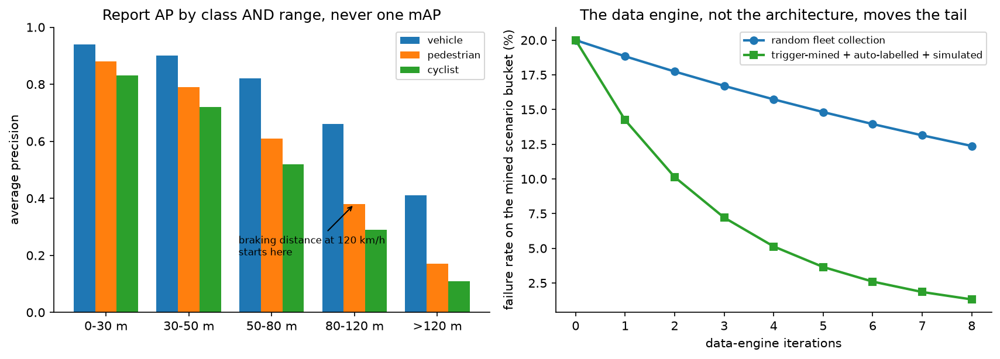
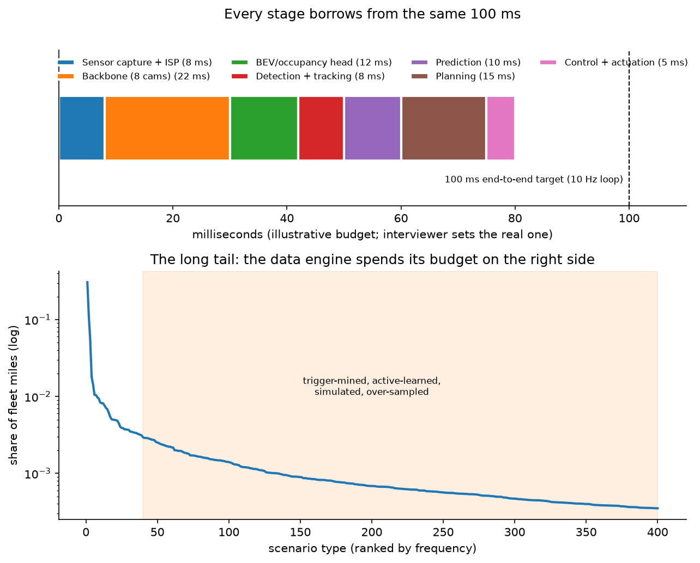

Autonomous-vehicle perception¶
Why this matters / who asks it. Tesla, Waymo, Zoox, Nuro, Aurora, Wayve, Motional, NVIDIA DRIVE and every robotics company with a camera ask a version of "design the perception system." The business problem is to produce, at 10 Hz on a fixed power budget in a moving vehicle, a representation of the world that a planner can act on safely, and to keep improving it on a fleet that generates more data in a day than you can ever label. Detecting objects is a part of that, not the whole of it. That reframing is most of the signal: the candidate who designs a detector fails; the candidate who designs a data engine plus an onboard stack plus an evaluation regime that can justify a release passes. This chapter is the deepest in the part, and it leans on Part XI for the model internals, BEV, fusion, tracking, occupancy, which it links rather than repeats.
TL;DR: the whiteboard in 60 seconds¶
flowchart LR
subgraph vehicle [Onboard, ~100 ms budget, fixed TOPS and watts]
SENS[Sensors<br/>8-12 cameras, radar,<br/>lidar if equipped, IMU/GNSS] --> SYNC[Time sync + calibration<br/>rolling-shutter, ego-motion]
SYNC --> BB[Shared backbone<br/>per-camera features]
BB --> BEV[Multi-view fusion into BEV<br/>+ temporal memory]
BEV --> H1[Detection + velocity]
BEV --> H2[Occupancy / free space]
BEV --> H3[Lanes, road graph, signs]
H1 --> TRK[Tracking + fusion<br/>with radar/lidar]
H2 --> TRK
H3 --> TRK
TRK --> PRED[Prediction] --> PLAN[Planner] --> CTRL[Control]
TRK --> TRIG[Triggers<br/>disagreement, novelty,<br/>intervention, near-miss]
end
TRIG -->|clips, bandwidth-capped| UP[Upload]
subgraph offline [Data engine]
UP --> MINE[Mining + dedup + active learning]
MINE --> AL[Auto-labelling<br/>offline multi-sensor,<br/>full future context, no latency limit]
AL --> DS[(Dataset<br/>versioned, scenario-tagged)]
DS --> TR[Training<br/>large multi-task model]
TR --> DIST[Distillation + quantisation<br/>to the onboard model]
DIST --> EVAL[Evaluation<br/>scenario bank, closed-loop sim,<br/>shadow mode on fleet]
EVAL --> REL[Release gate] --> OTA[OTA rollout]
end
OTA --> SENS- Design the loop, not the model. The fleet, the triggers, auto-labelling, mining, training, simulation, shadow mode and OTA form a cycle; the model is one box in it.
- One backbone, many heads. Per-camera features → a shared BEV/occupancy representation with temporal memory → detection, free space, lanes, signs, traffic controls. Multi-task because compute is fixed and tasks share geometry.
- Fuse in a common space, not at the output. Late (track-level) fusion is simple and robust to sensor failure; mid-level BEV fusion is more accurate because it can associate weak evidence across sensors before any thresholding.
- Latency is a safety parameter. At 30 m/s, every 10 ms of pipeline latency is 0.3 m of position error; the budget is the design, and end-to-end sensor-to-actuation latency, not model FLOPs, is what you commit to.
- Auto-labelling is the only affordable labelling. Offline, you have the full future of the clip, all sensors, unlimited compute, and human review only for the residual, which is how a fleet's worth of data becomes training data.
- Triggers make the long tail tractable. Shadow-mode disagreement, model uncertainty, rare-class detections, driver interventions and near-misses decide what the (bandwidth-limited) fleet uploads.
- Evaluate per class per range per condition, plus closed-loop simulation, plus a versioned scenario bank that every release must pass. A single mAP number is a red flag in this interview.
- Shadow mode is the bridge: run the candidate model on the vehicle without acting, compare its outputs to the shipped model and to auto-labels, and gate the release on the disagreement analysis.
- Distillation and quantisation move a large offline teacher into the onboard student under the TOPS and thermal budget; the teacher never ships.
- Evidence: Tesla AI Day presentations (HydraNets, BEV transformer, occupancy networks, the data engine, auto-labelling), Waymo research (Scalable Waymo Open Dataset, StreetHover/PointPillars-lineage detection work, simulation and Waymax), NVIDIA DRIVE technical posts, and the academic lineage, LSS, BEVFormer, BEVFusion, PointPillars, Occupancy Networks.
1. Requirements & scoping¶
Functional. Produce, every cycle: a set of tracked dynamic objects with class, 3D extent, position, velocity and acceleration plus uncertainty; a static-world representation (drivable free space or occupancy, with occlusion state); the road graph (lanes, boundaries, crossings); traffic-control state (lights, signs, cones, temporary markings); and per-output confidence the planner can reason about. Handle sensor degradation and report it.
Non-functional, ask for or assume.
| Quantity | Ask | Defensible assumption |
|---|---|---|
| ODD | "What operational design domain: highway, urban, weather, geographies?" | Urban + highway, temperate, day and night; fog/snow explicitly out of ODD at v1 |
| Sensor suite | "Cameras only, or camera+radar+lidar? Fixed or evolving?" | 8 cameras at 1920×1080, 30 fps, 360° radar, optional lidar |
| Cycle rate & latency | "Planner cycle rate and the sensor-to-actuation budget?" | 10 Hz planner; ≤ 100 ms sensor-to-control p99, with a hard worst case |
| Compute | "Onboard TOPS, memory bandwidth, power/thermal budget?" | ~100–500 INT8 TOPS, ~50–100 W for the inference SoC, no active cooling headroom |
| Range | "Detection range required per class?" | 150 m+ vehicles, 80 m+ pedestrians; derived from braking distance at the ODD's top speed |
| Fleet | "How many vehicles, how many miles/day, upload bandwidth per vehicle?" | 10k vehicles × 100 km/day; a few GB/vehicle/day of upload |
| Labelling | "Human labelling budget? Auto-labelling infrastructure?" | Humans for audit and residual only; auto-label the rest |
| Release | "What is the release gate and who owns it? Regulatory constraints?" | A safety case: scenario bank + sim + shadow metrics, signed off by a safety team |
Success metrics. This is the part candidates get wrong, so be explicit about the three levels:
- System-level safety (what the business cares about): interventions or disengagements per 1,000 km, contact events per million km, near-miss rate, and (in simulation) collision rate and rule-violation rate over the scenario bank. These are the only metrics that mean anything to a safety case, and they are closed-loop: they depend on planning, not perception alone.
- Perception guardrails (what gates a release): per-class AP by range bucket and by condition (night, rain, backlit); false-negative rate on vulnerable road users at the ranges that matter; track fragmentation and ID switches; velocity error; occupancy IoU and, crucially, false-free-space rate (declaring occupied space free is the failure that kills); latency p99.9; and detection stability (flicker) which the planner feels as jerk.
- Offline proxies (what the model team iterates on): the same detection and occupancy metrics on the versioned test sets, plus disagreement rate against the auto-labeller on shadow data.
State the asymmetry loudly: a false negative on a pedestrian at 40 m and a false positive on a plastic bag are not comparable errors, so the metric suite must be per-class, per-range, and asymmetric, and phantom braking (a false positive that causes hard braking) is itself a safety event, so you cannot bias everything toward recall.
Questions a staff engineer asks.
- "What is the downstream consumer's contract? Does the planner want boxes, or occupancy, or both, and with what uncertainty representation? I'd rather design to the planner's interface than to a benchmark."
- "Is lidar in the production vehicle, or only on a data-collection subset? If it is only on a data fleet, it becomes an auto-labelling sensor rather than a runtime sensor, which changes the whole design."
- "What is the intervention data rate? Interventions are my highest-value labels."
- "What is the worst-case latency I must guarantee, not the average? A safety case is written against the worst case."
- "Can the model fail gracefully, is there a fallback stack (radar-only, comfort-brake-to-stop) the system can degrade to?"
- "How do we currently decide a model is safe to ship, and how long does that take? The release cadence constrains how aggressive the architecture can be."
2. Data¶
Sources. Raw sensor streams (camera at full resolution before ISP tone mapping where possible, radar detections or raw cubes, lidar point clouds on equipped vehicles), vehicle state (wheel odometry, IMU, steering, pedals), GNSS and map priors where used, the outputs of the shipped stack (for shadow comparison), driver interventions and disengagement events, and simulation.
The labelling problem, stated as an economics problem. A fleet of 10k vehicles at 100 km/day at 30 fps × 8 cameras produces on the order of \(10^{11}\) frames per year. Human 3D labelling runs at minutes per frame. There is no budget, at any company, that closes that gap. Therefore:
Auto-labelling is the primary labelling mechanism, and its key insight is that the offline problem is far easier than the online one:
- You have the entire future of the clip, so an object briefly occluded at \(t\) can be labelled from its trajectory at \(t \pm 5\,\text{s}\). Offline tracking runs bidirectionally.
- You have all sensors, including ones not on the production vehicle (a lidar- equipped data-collection subset labels camera-only production data).
- You have unlimited compute and latency: a teacher ensemble that takes ten seconds per frame is fine offline.
- You can aggregate across vehicles and passes: many vehicles driving the same intersection reconstruct the static world far better than any single pass, which is how road geometry and permanent signage get labelled.
Humans then do three things: audit a sample to measure auto-label quality, label the residual cases the auto-labeller flags as uncertain, and adjudicate the definition of ambiguous categories (is a person on a scooter a pedestrian or a cyclist?). Tesla described this pipeline at AI Day 2021 and 2022, offline auto-labelling that reconstructs both the static world and object trajectories from fleet clips, with humans reviewing rather than drawing, and the same pattern, with different sensors, is standard across the industry.
Label biases you must name.
- Trigger-selection bias: the fleet only uploads what the triggers ask for, so the dataset is a biased sample of the world. That is deliberate, but you have to remember it when computing anything that claims to be a rate. Keep a small uniformly random upload stream alongside the triggered one, purely so you can estimate true prevalence and calibrate the triggered data's weighting.
- Teacher bias: the auto-labeller's systematic errors (say, under-detecting low-contrast pedestrians at night) become the student's errors and are invisible to a test set produced by the same teacher. Mitigation: a human-labelled golden set that is never auto-labelled, sampled independently of the triggers.
- Survivorship: data from disengagements shows what the driver did after taking over; the counterfactual (what would the stack have done) is unobserved and must come from simulation.
- Geography and fleet composition: the fleet drives where customers live; the ODD claim must match the data distribution, and per-region metrics catch the gap.
Triggers (the highest-leverage system in the whole design). Bandwidth is the binding constraint, so the vehicle must decide onboard what is worth uploading:
| Trigger family | Example | What it buys |
|---|---|---|
| Shadow disagreement | Candidate model and shipped model differ on a track | The exact cases where the new model changes behaviour |
| Teacher–student disagreement | Onboard student differs from a small onboard "critic" or from the radar | Cheap proxy for label error |
| Uncertainty / novelty | High predictive entropy, low max-softmax, out-of-distribution feature statistics | Unknown unknowns |
| Rare class or rare attribute | Emergency vehicles, road debris, unusual vehicle types, hand signals | The long tail by construction |
| Behavioural | Driver intervention, hard brake, ABS/ESC activation, near-miss by TTC | Safety-relevant events with an implicit label |
| Geometric/temporal inconsistency | Track flicker, implausible velocity, occupancy contradiction over time | Self-supervised error detection |
| Targeted campaign | "Upload anything with a school bus with its stop sign extended" | Directed data collection for a known gap |
The last row is the operationally important one: engineers must be able to deploy a new trigger to the fleet in days and get a curated dataset back. Tesla's AI Day description of the data engine is essentially this, define the failure mode, query the fleet for it, label, retrain, verify, and it is the answer to "how do you fix a specific rare failure?"

Left: AP collapses with range and collapses fastest for the smallest, most safety-critical classes, which is why a single mAP number hides exactly the failures that matter. Right (illustrative): random fleet collection barely moves a mined long-tail bucket, while triggered collection plus auto-labelling plus targeted simulation does; the data engine, not the architecture, is what closes the tail.
Freshness and versioning. Datasets are versioned artefacts with scenario tags; every model records the dataset version it trained on; every regression is traceable to a dataset diff. Versioning is the only way to answer "why did this get worse" three releases later.
Privacy. Faces and licence plates blurred at or near the source; geofenced retention rules; driver-identifiable data handled under a separate policy; regional data-residency constraints that can determine where training clusters are located.
3. Modelling¶
3.1 Baseline¶
Per-camera 2D detection with a standard detector, monocular depth or a flat-ground assumption to lift boxes to 3D, per-camera tracking, and hand-written fusion across cameras in the vehicle frame. It works, and it is what everyone shipped first. Its failure modes are the argument for everything that follows: objects spanning two cameras get two identities, depth from a single camera is ill-conditioned, and the hand-written fusion has no way to combine weak evidence.
3.2 From per-camera to BEV: the central architectural decision¶
The problem with per-camera outputs is that the consumer (the planner) lives in a 3D vehicle-centric world, and every per-camera decision is made without the other cameras' evidence. The fix is to fuse features, not outputs, in a shared bird's-eye-view space.
Two families, and you should be able to contrast them (the mechanics are in multi-camera & BEV):
Forward projection ("lift-splat"). Each camera predicts a depth distribution per pixel, features are "lifted" into a frustum point cloud weighted by that distribution, and "splatted" into BEV grid cells (Philion & Fidler, "Lift, Splat, Shoot", ECCV 2020). Intuitive and cheap; accuracy is bounded by the depth distribution's quality.
Backward projection (query-based attention). Define queries on the BEV grid (or for objects) and let each query attend to the image features it projects into, using the known camera geometry to restrict attention (BEVFormer, Li et al., ECCV 2022, arXiv:2203.17270, which adds temporal self-attention over previous BEV features). No explicit depth estimate is needed (the network learns where to look) and temporal fusion falls out naturally. More expensive; needs careful positional encoding of the camera geometry.
Both require accurate calibration and time synchronisation. Say this explicitly: extrinsics drift with temperature and vibration, rolling-shutter cameras capture different rows at different times while the vehicle moves, and a 5 ms sync error at 30 m/s is 15 cm of misalignment that the network cannot fix. Online calibration monitoring (detecting reprojection drift against static structure) is a production subsystem, not a one-time factory step.
The multi-task structure on top, one backbone, a shared BEV representation, and many heads (Tesla's "HydraNets" framing from AI Day 2021), is driven by compute: you cannot afford one network per task, and the tasks share geometry, so sharing the trunk is both cheaper and better. The cost is training complexity: tasks have different data volumes and loss scales, heads interfere, and a change to the trunk requires re-validating every head. The standard mitigations are per-task loss weighting, freezing the trunk while iterating a head, and per-head regression tests.
3.3 Occupancy: the answer to "what about things that aren't in your class list"¶
A box detector can only report objects it has a class for. The world contains debris, fallen cargo, animals, overhanging structures and articulated things that no taxonomy covers, and the planner mostly needs to know what space is not drivable, which is a geometric question rather than a semantic one.
Occupancy prediction outputs a voxel grid (or a continuous occupancy field) with occupied/free/unobserved per voxel, optionally with semantics and with occupancy flow (per-voxel velocity) so the planner can reason about moving unlabelled mass. Tesla presented occupancy networks at AI Day 2022 as exactly this: a general geometric representation that does not require the object to be a known class, run at high rate with a lower-resolution semantic head. The academic lineage runs through Occupancy Networks (Mescheder et al., CVPR 2019) for the representation and a large body of camera-based occupancy work since.
The design point to state: detection and occupancy are complementary, not alternatives. Boxes give the planner trackable, predictable agents with identity and intent; occupancy gives it a safety floor that does not depend on the taxonomy. Ship both, and make the planner's contract explicit about which it trusts for what. The critical metric is the false-free rate, voxels declared free that are occupied, because that is the error that leads to driving into something, and it must be evaluated separately from IoU, which averages over the easy empty voxels.
3.4 Temporal modelling¶
A single frame cannot give velocity, cannot see through momentary occlusion, and cannot disambiguate a stopped car from a parked one. Options, in increasing power and cost:
- Ego-motion-compensated feature memory: warp the previous BEV feature map into the current frame using measured ego-motion and fuse (concatenate or attend). Cheap, and it is what most production BEV stacks do.
- Recurrent or attention-based video modules over a window of several seconds, which give explicit motion features and let the network remember objects through occlusion. Tesla's AI Day presentations describe a video module with spatial and temporal queueing so that the network can remember, for example, a sign it has passed or a car that is momentarily occluded.
- Full spatio-temporal transformers, which is where the research is going, at a compute cost that has to be earned.
The systems consequence: temporal models carry state, and state means the inference engine is no longer a pure function. You have to handle initialisation, recovery after a dropped frame, and the fact that a bug can persist across frames. Your validation must include state-corruption scenarios.
3.5 Sensor fusion¶
See sensor fusion for the estimation theory; the design decisions here are:
| Fusion level | What it is | Pro | Con | Use when |
|---|---|---|---|---|
| Late / track-level | Each sensor produces tracks; a fusion filter associates them | Modular, degrades gracefully, easy to attribute failures, each sensor testable alone | Cannot combine sub-threshold evidence; association errors | Safety-critical redundancy; heterogeneous teams; early programmes |
| Mid / feature-level (BEV) | Camera and lidar/radar features fused in the shared BEV grid (BEVFusion, Liu et al., ICRA 2023, arXiv:2205.13542) | Best accuracy; combines weak evidence; one model | A sensor dropout changes the input distribution; harder to attribute failures | Mature stack with the training data to cover dropout cases |
| Early / raw | Raw pixels and points into one network | Maximum information | Brittle to calibration and sensor changes; huge data cost | Rarely in production |
The nuance interviewers probe: radar is not a worse lidar. Radar measures radial velocity directly (Doppler) at long range and through weather, with poor angular resolution and heavy multipath. Its job in the stack is velocity and long-range presence, and a common production pattern is camera for classification and lateral position, radar for range rate, fused at track level with sensor-specific uncertainty models. And an essential design requirement: the stack must define its behaviour when a sensor degrades, a mud-covered camera, radar blindness in heavy spray, which means degradation detection is itself a perception task, with its own head and its own metrics.
3.6 Tracking and the interface to prediction¶
Detection gives you per-frame evidence; the planner needs consistent identities with velocity and uncertainty. The classical answer, Kalman or IMM filters with Hungarian/greedy association on Mahalanobis or IoU distance, remains the production default because it is inspectable, cheap, and has well-understood failure modes; learned association (appearance embeddings, transformers over tracks) improves crowded scenes at the cost of explainability. See tracking.
What matters for the system design:
- Track quality is a planner-facing metric. ID switches cause the prediction module to lose an agent's history; fragmentation causes phantom appearances; both show up as jerky planning long before they show up in AP.
- Uncertainty must be propagated, not thresholded away. The planner's behaviour should differ for a confidently-tracked vehicle and a flickering, low-confidence detection; if perception collapses everything to a box list, the planner cannot be appropriately conservative.
- The perception/prediction boundary is negotiable. End-to-end designs push detection, tracking and prediction into one network (prediction & planning); the trade-off is accuracy and consistency versus testability and the ability to attribute a failure to a component. For an interview: modular with learned components inside each module is the defensible default, and you should name the end-to-end alternative and the condition under which you would move (a mature closed-loop evaluation capability that can validate a system you cannot unit-test).
3.7 Making it fit: distillation, quantisation, and the compute budget¶
The onboard model is constrained by TOPS, memory bandwidth, and thermals, and by the fact that the SoC is fixed for the life of the vehicle while your models keep growing. Techniques, in the order you would apply them:
- Architecture for the target: the operator set the accelerator supports efficiently is a hard constraint. An architecture that is 20 % better on a GPU benchmark but uses an unsupported attention pattern is worthless.
- Distillation from the large offline teacher (or the auto-labeller ensemble) into the onboard student, using soft targets and intermediate features. The teacher is also the auto-labeller, so the data engine already produces it.
- Quantisation to INT8 (or lower) with quantisation-aware training; the accuracy delta must be measured per class per range, not in aggregate, because quantisation hurts small distant objects first.
- Pruning and operator fusion, then kernel-level tuning for the target.
- Scheduling: not every head needs to run every cycle. Traffic-light state at 30 Hz, sign classification at 5 Hz, and a semantic occupancy refresh at a lower rate than the geometric one; this multi-rate scheduling is often where the last 30 % of the budget comes from.
Quantify it: at 8 cameras × 1920×1080 × 30 fps, the raw pixel rate is ~0.5 GPix/s. A backbone at ~200 GFLOP per full multi-camera frame at 30 Hz is ~6 TFLOP/s of dense compute, feasible in INT8 on a modern automotive SoC, and completely infeasible if you let the model double without a budget conversation. That arithmetic is what makes the "distil and quantise" answer credible rather than reflexive.
4. Training & serving¶
Training. A large multi-task model trained on the versioned dataset, typically with: a pretrained backbone (self-supervised on unlabelled fleet video is a natural fit, see self-supervised learning), per-task loss weights, heavy augmentation (photometric, weather synthesis, camera dropout, calibration jitter, the last two teach the model to survive real degradation), and class/range-balanced sampling so distant pedestrians are not drowned by near cars. Multi-node data-parallel training with the usual systems concerns (distributed training); the bottleneck is usually the data pipeline, not the GPUs, because the samples are multi-camera video clips.
Cadence. Continuous training with weekly or biweekly release candidates; the release gate, not the training, is the slow step. Keep the teacher (auto-labeller) on its own, slower cadence, because changing the teacher changes the labels and therefore invalidates comparisons, a versioning discipline worth stating.
Onboard serving and the latency budget.

Top: an illustrative 100 ms sensor-to-actuation budget, every stage borrows from the same envelope, and perception's share is what you negotiate. Bottom: the scenario frequency distribution; almost all miles are in the head, almost all risk is in the shaded tail, and the data engine's job is to spend the collection budget there.
| Stage | Budget | Notes |
|---|---|---|
| Capture + ISP + sync | 8 ms | rolling shutter and exposure control matter; HDR merging costs time |
| Backbone (all cameras) | 22 ms | the dominant cost; batched across cameras |
| BEV fusion + temporal | 12 ms | attention or splat; state carried across frames |
| Heads (detection, occupancy, lanes, signs) | 12 ms | multi-rate scheduled |
| Tracking + sensor fusion | 8 ms | CPU or DSP |
| Prediction | 10 ms | |
| Planning | 15 ms | |
| Control + actuation | 5 ms | |
| Total | ~92 ms | commit to the p99.9, not the mean; a 300 ms tail is a safety event |
Say what happens on overrun: the system must have a defined behaviour, reuse the previous cycle's output with dead-reckoned ego-motion, drop optional heads, and escalate to a degraded mode if it persists. A perception stack without a defined overrun behaviour is not a safety-grade design.
Redundancy and fallback. A separate, simpler, independently-developed path (radar-and-simple-vision emergency braking, for instance) that can bring the vehicle to a safe stop if the main stack fails, with clearly defined arbitration. This is standard practice in safety engineering and it is a strong signal to mention.
5. Evaluation & experimentation¶
This section is what separates AV perception from every other chapter in this part: you cannot A/B test a safety-critical system on live traffic the way you A/B test a feed. The evaluation stack has four layers.
(a) Open-loop offline metrics. Per-class AP by range bucket, by time of day, by weather, by scenario tag; velocity and dimension errors; occupancy IoU and false-free rate; track continuity metrics. Evaluated on (i) a human-labelled golden set, (ii) the auto-labelled test set (larger, but with teacher bias), (iii) a scenario bank of curated hard cases that grows with every failure found. The scenario bank is the regression suite: every release must not regress on any case in it, and a new failure in the field becomes a new bank entry, permanently. Open-loop metrics answer "is the perception better", not "is the system safer".
(b) Closed-loop simulation. Replay the recorded sensor data through the new stack and let the planner act, with other agents responding (log-replay with reactive agents, or fully synthetic scenarios). Metrics: collision rate, rule violations, comfort, and progress. This is the only offline method that can capture the fact that a perception change alters the vehicle's trajectory, which alters what it sees. Waymo has published in this area, including the Waymax simulator for closed-loop planning research, and their broader simulation work; the limitation everybody has is sensor realism, resimulating camera images for a trajectory the vehicle never drove is an open problem, which is why log-replay with a perception-output-level interface, and neural rendering approaches, are both used.
(c) Shadow mode on the fleet. Run the candidate model onboard without acting, log its outputs alongside the shipped model's, and analyse the disagreements, this gives you real-world coverage at fleet scale with no risk, and it is also the highest-value trigger for data collection. What it cannot tell you is the closed-loop consequence, because the candidate never drove.
(d) Structured on-road testing with safety drivers on a defined route mix, then a staged rollout: internal fleet → employee fleet → small customer cohort → wide release, with per-stage metrics and a rollback path. OTA deployment is what makes staged rollout possible, and it is also what makes a bad release a fleet-wide event, which is why the gate is heavy.
The release gate. Write it as a checklist because that is how it exists in reality: no regression on the scenario bank; closed-loop sim collision and violation rates within tolerance; shadow-mode disagreement analysed with every material disagreement categorised; latency p99.9 within budget on the target SoC at temperature; per-class per-range metrics within tolerance on the golden set; degradation behaviours tested; rollback verified.
Monitoring in production. Onboard: detection-rate and occupancy statistics per region (a sudden shift means a sensor or a calibration problem), latency distributions, degradation-detector rates, disagreement with radar, watchdog resets. Offline: intervention rate by scenario tag, near-miss rate, and the customer-visible metrics. Retraining triggers: a new scenario cluster appearing in the interventions, a region's metrics drifting after a rollout, or a new ODD.
6. Trade-offs & alternatives¶
| Decision | Chosen | Alternative | When you'd flip |
|---|---|---|---|
| Sensor suite | Camera-centric with radar; lidar on the data fleet | Lidar in every production vehicle | Robotaxi economics (the sensor cost is amortised over service revenue, and you want redundancy for a driverless safety case) rather than consumer-vehicle BOM |
| Representation | Shared BEV/occupancy, multi-task heads | Per-camera 2D + geometric fusion | Very constrained compute, single-camera products, or an early programme where modularity beats accuracy |
| BEV construction | Query/attention-based (BEVFormer-style) | Lift-splat forward projection | Tight compute budget or when a reliable depth sensor makes explicit lifting accurate and cheap |
| Fusion level | Mid-level BEV fusion for accuracy + late fusion for redundancy | Late fusion only | Safety case requires independently-validatable sensor paths; then keep fusion late and accept the accuracy cost |
| Class taxonomy | Detection + class-agnostic occupancy | Detection only | Never for open-world driving; occupancy-only when the planner is purely geometric (some low-speed robots) |
| Temporal | Ego-motion-warped feature memory | Single frame | Single frame only for a redundant fallback path where statelessness is a safety property |
| Tracking | Classical filters + learned association features | Fully end-to-end tracking | Mature closed-loop validation exists and crowded-scene performance dominates |
| Labelling | Auto-label + human audit/residual | Human labelling | Small data, novel sensor, or bootstrapping the first teacher |
| Model size | Large teacher offline, distilled student onboard | Ship the big model | Never on a fixed SoC; the teacher is the auto-labeller |
| Evaluation | Scenario bank + closed-loop sim + shadow | On-road A/B | You cannot A/B a safety-critical change on the public; staged rollout is the closest analogue |
| Architecture | Modular with learned components | End-to-end driving | When closed-loop evaluation is strong enough to validate a system you cannot unit-test; the trade-off is interpretability and the ability to attribute a crash |
Failure modes and detection.
- Calibration drift: reprojection error against static structure, monitored onboard; symptoms are double-detections at camera boundaries and range bias.
- Teacher bias baked into the student: caught only by the independent human golden set; this is why that set must never be auto-labelled.
- Distribution shift after an ODD expansion: per-region metrics and a novelty trigger; the mitigation is a targeted collection campaign before, not after, the expansion.
- Phantom braking: a false positive with a behavioural consequence. Track it as a headline metric, mine every instance, and note that it is the reason you cannot tune everything toward recall.
- Temporal state corruption: a bug that persists across frames; test with injected dropped frames and corrupted state.
- Occlusion-induced false-free: the occupancy head marking unobserved space as free; must be a separate output state (occupied/free/unknown) and a separate metric.
- Fleet-wide regression from an OTA: staged rollout, automatic metric monitoring per stage, and a tested rollback. The fact that this is possible is why the release gate is so heavy.
7. How real companies did it: as mock interviews¶
7.1 Tesla: "vision only, a fleet, and a fixed computer"¶
Interviewer prompt. "We have a million vehicles with eight cameras and a fixed onboard computer, no lidar, and more data than anyone could label. Design the perception stack and, more importantly, the process that keeps improving it."
Walkthrough. Clarify: camera-only at runtime; compute is fixed; the fleet is the asset; the release gate is a staged OTA. Metrics: intervention rate and per-class per-range detection; phantom-braking rate as a guardrail. Data: fleet triggers decide uploads; auto-labelling reconstructs the world offline with full future context and multi-pass aggregation; humans audit. Model: shared backbone per camera → fusion into a vector/BEV space with a transformer → a video module for temporal memory → many heads (HydraNets); later, an occupancy network for class-agnostic geometry. Serve: distilled and quantised onto the vehicle computer, multi-rate head scheduling. Evaluate: shadow mode on the fleet, a growing bank of mined cases, staged OTA.
What the sources say. Tesla's AI Day 2021 and AI Day 2022 presentations describe: the multi-camera fusion into a shared representation with a transformer-based mapping from image space to a vector space; the video/temporal module for memory; the HydraNet multi-task structure with a shared backbone and many heads; occupancy networks as a general, class-agnostic geometric output; the auto-labelling pipeline that reconstructs static structure and object trajectories offline from fleet clips using full future context and multi-vehicle aggregation; and the data-engine loop of trigger → collect → label → retrain → verify via shadow mode.
How to say it in the interview: design the data engine first
"Before I design a network I'd design the loop that feeds it, because on a fleet this size labelling is the binding constraint, not modelling. Tesla described this at AI Day: fleet triggers select clips, an offline auto-labeller reconstructs the scene using the full future of the clip and aggregation across multiple passes and vehicles, humans audit rather than draw, and the retrained model is verified in shadow mode on the fleet before an OTA. The alternative is to buy human labels for a sampled stream, which is what everyone does at the start and which stops scaling at exactly the point the long tail starts to matter, random sampling almost never contains the rare event you need. The trade-off I'd flag is teacher bias: the auto-labeller's systematic errors become the student's, and they're invisible if your test set came from the same teacher, so I'd fund a human-labelled golden set sampled independently of the triggers as the only unbiased measurement. I'd flip toward human labelling for a brand-new sensor or ODD where no teacher exists yet."
How to say it in the interview: BEV fusion over per-camera outputs
"I'd fuse camera features into a shared bird's-eye-view representation rather than run per-camera detectors and fuse their outputs. Tesla's AI Day presentations describe exactly this transition, a transformer that maps image features into a vector space shared across cameras. The motivation they gave is the one I'd give: an object spanning two cameras gets one consistent identity and one position, and weak evidence from several views can be combined before anything is thresholded, which per-camera detection makes impossible. The alternative, per-camera detection with geometric fusion, is simpler, and it has a real advantage I'd name: each camera path can be validated independently, which is what a redundancy argument needs. The trade-off is compute and the fact that calibration errors now corrupt a shared representation rather than one camera's output, so I'd add online calibration monitoring as a production subsystem. I'd keep a simple per-camera path anyway as the independent fallback for emergency braking."
How to say it in the interview: occupancy alongside boxes
"I'd ship a class-agnostic occupancy output next to the object detector, not instead of it. Tesla presented occupancy networks at AI Day 2022 for precisely the reason I'd give: a box detector can only report categories it was trained on, and the road contains debris, fallen cargo and articulated things that no taxonomy covers, while the planner mostly needs to know what space is not drivable. The alternative (expanding the class list) is a treadmill that never ends and still fails on the first genuinely novel object. The trade-off is that occupancy gives the planner no identity or intent, so it can't predict that a blob will pull out in three seconds; that's what the boxes are for. The metric I would watch is not IoU, which averages over mostly-empty space, but the false-free rate (voxels we call free that are occupied) because that is the error that drives into something."
7.2 Waymo: "a driverless safety case"¶
Interviewer prompt. "We are removing the safety driver. Perception must support a safety argument that a regulator and our own board will accept. What changes about your design and, especially, your evaluation?"
Walkthrough. Clarify: driverless means no human fallback, so redundancy and the degraded-mode behaviour become primary; the sensor suite is chosen for the safety case, not the BOM. Metrics: closed-loop safety metrics plus per-component guarantees; the release gate is a documented safety case. Data: a rich multi-sensor fleet including lidar, published in part as the Waymo Open Dataset; simulation as a first-class data source. Model: multi-sensor fusion with lidar as a primary geometric sensor and cameras for semantics, with heavy emphasis on long-range detection and on behaviour prediction. Serve: redundant compute with a fallback path that can achieve a minimal risk condition. Evaluate: extensive closed-loop simulation (including reactive-agent simulation) scenario libraries, and structured on-road testing before any ODD expansion.
What the sources say. Waymo has published the Waymo Open Dataset ("Scalability in Perception for Autonomous Driving: Waymo Open Dataset", CVPR 2020, arXiv:1912.04838) with multi-sensor data and 3D labels, the Waymo Open Motion Dataset for behaviour prediction, and Waymax ("Waymax: An Accelerated, Data-Driven Simulator for Large-Scale Autonomous Driving Research", NeurIPS 2023 Datasets and Benchmarks), a closed-loop simulator for planning research; their safety blog and safety-framework publications describe the layered approach to validating readiness, including simulation, closed-course and on-road testing.
How to say it in the interview: evaluation is the design
"For a driverless system I'd spend as much design effort on the evaluation stack as on the model, because you cannot A/B a safety-critical change on the public. My stack has four layers: open-loop metrics on a human-labelled golden set and a versioned scenario bank; closed-loop simulation where the planner actually acts and other agents react; shadow mode on the fleet for real-world coverage with no risk; and staged on-road rollout. Waymo's published work supports the middle layer directly, they released Waymax, a closed-loop data-driven simulator, at NeurIPS 2023, and the Waymo Open Dataset papers describe the multi-sensor labelled data underpinning perception evaluation. The alternative, shipping on open-loop metrics alone, is the classic trap: a perception change alters the trajectory, which alters what the car sees next, and open-loop evaluation is blind to that entire feedback path. The trade-off is that closed-loop simulation needs sensor realism it does not fully have, so I'd be explicit that log-replay at the perception-output level covers planning changes well and camera-level resimulation is still an open problem."
How to say it in the interview: sensor suite follows the business model
"Whether lidar goes in the production vehicle is a business decision before it is a technical one, and I'd say so. For a robotaxi, the sensor cost amortises over service revenue and the driverless safety case wants independent, physically different measurement paths, which is the suite Waymo built and published data from in the Waymo Open Dataset. For a consumer vehicle at consumer margins with a human driver as the fallback, a camera-centric suite with radar is the defensible choice and lidar lives on the data-collection fleet as an auto-labelling sensor. The trade-off is direct: cameras give semantics cheaply and estimate geometry indirectly, lidar gives geometry directly and semantics poorly, and radar gives radial velocity through weather with poor angular resolution. I'd flip to production lidar the moment the programme's safety argument requires a redundant geometric sensor that does not share a camera's failure modes."
7.3 NVIDIA DRIVE: "the platform view"¶
Interviewer prompt. "We supply the compute and a reference stack to several carmakers with different sensor suites. How do you design perception so it is portable, and what does that cost you?"
Walkthrough. Clarify: the customer's sensor set varies, so the stack must be configurable; certification and functional-safety requirements are contractual; the compute target is known precisely. Model: a set of networks with defined interfaces (detection, free space, lanes, signs, parking) that can be composed, plus the tooling (optimising inference compilers, quantisation, and validation) around them. Serve: an inference runtime tuned for the target SoC with deterministic timing. Evaluate: per-network benchmarks plus system integration testing and safety certification artefacts.
What the sources say. NVIDIA's DRIVE developer documentation and technical blog posts describe the DRIVE platform's perception components (DNNs for obstacle detection, free space, lane and sign perception), the use of TensorRT for optimised, quantised inference on DRIVE SoCs, and their safety-oriented development process and documentation (including their published safety report), aimed at automotive functional-safety requirements.
How to say it in the interview: portability has a price
"If the stack has to run on several sensor suites, I'd keep sharply defined interfaces between networks and make the fusion configurable, which is the shape of NVIDIA's DRIVE perception stack as described in their developer docs, a set of DNNs with defined outputs, compiled and quantised for the target SoC through TensorRT. The alternative (one end-to-end network per customer configuration) would be more accurate per configuration and completely unmaintainable across a dozen of them. The trade-off is real and I'd name it: a modular, portable stack cannot exploit cross-sensor feature fusion as aggressively as a single-customer model tuned to one fixed suite, so it leaves accuracy on the table in exchange for reuse and certifiability. If I were building for one vehicle I control end to end, I'd fuse at the feature level and accept the coupling."
7.4 The research lineage: "justify your BEV choice"¶
Interviewer prompt. "You said you'd build a BEV representation. There are several ways. Which one, and why?"
Walkthrough. Clarify: compute budget, whether a depth sensor is available at training time, how much temporal context is needed. Model: lift-splat if depth is well-supervised and compute is tight; attention-based BEV queries if you need temporal fusion and can afford it; add lidar at the BEV feature level if the production vehicle has it. Evaluate: per-range detection metrics, because the methods differ most at long range where depth is least certain.
What the sources say. Philion & Fidler, "Lift, Splat, Shoot" (ECCV 2020, arXiv:2008.05711) introduced the depth-distribution lifting of multi-camera features into a BEV grid. Li et al., "BEVFormer" (ECCV 2022, arXiv:2203.17270) used spatial cross-attention from BEV queries into image features plus temporal self-attention over past BEV features. Liu et al., "BEVFusion" (ICRA 2023, arXiv:2205.13542) unified camera and lidar features in the shared BEV space. Lang et al., "PointPillars" (CVPR 2019, arXiv:1812.05784) is the efficient lidar-detection baseline these are compared against.
How to say it in the interview: pick the BEV mechanism on evidence
"I'd start from lift-splat, the Philion and Fidler formulation from ECCV 2020, where each pixel predicts a depth distribution and features are splatted into BEV. It is cheap and its failure mode is understandable: accuracy is bounded by the depth distribution. I'd move to attention-based BEV queries, as in BEVFormer at ECCV 2022, when I need temporal fusion, since their temporal self-attention over previous BEV features gives velocity and occlusion robustness that a single-frame splat cannot, and the network learns where to look instead of relying on an explicit depth estimate. If the production vehicle carries lidar, I'd fuse both modalities in the same BEV space, which is what BEVFusion demonstrated at ICRA 2023. The trade-off across all of these is compute and calibration sensitivity, so my decision rule is: measure AP by range bucket on the target SoC's quantised model, because that is where these methods actually differ and where a benchmark mAP hides the difference."
7.5 The long tail: "fix this specific failure"¶
Interviewer prompt. "A customer sends a video: the car fails to yield to a school bus with its stop arm extended. You have two weeks. What do you do?"
Walkthrough. Clarify: is it a perception failure (the stop arm isn't detected) or a planning failure (it is detected and the policy is wrong)? Check the logs first. Assume perception. Data: deploy a targeted trigger to the fleet ("school bus detected with unusual appendage" or a generic rare-object trigger plus a query over already-uploaded clips); mine the existing dataset; generate synthetic variants in simulation for the geometries the fleet will not supply in two weeks. Model: it is an attribute of an existing class, so add a stop-arm-state head rather than a new class; retrain with the mined data oversampled. Evaluate: add the case to the scenario bank permanently; verify in closed-loop sim that the planner yields; shadow-mode the new model to check it does not regress general bus detection or introduce false stop-arm detections; staged OTA.
What the sources say. This is the data-engine loop as Tesla described it at AI Day, define the failure mode, query the fleet for matching data, auto-label, retrain, verify in shadow mode, combined with the standard practice of simulation for geometries the fleet cannot supply quickly; NVIDIA and Waymo both describe simulation-based scenario generation for rare events in their technical materials.
How to say it in the interview: the fix is a process, not a model change
"My answer to any specific long-tail failure is the same loop, and I'd say it as a loop rather than propose an architecture. Triage the logs to decide whether it's perception or planning; deploy a targeted fleet trigger and simultaneously query the existing uploaded data for matches; auto-label the returns; generate synthetic variants for the configurations the fleet won't produce in two weeks; retrain with the mined data oversampled; add the case to the scenario bank permanently so no future release can regress it; verify in closed-loop sim and shadow mode; staged OTA. That's the data-engine loop Tesla described at AI Day, and the key property is that it is repeatable, the thousandth long-tail bug costs the same as the first. The alternative, hand-tuning a heuristic for school buses, ships faster this week and adds a permanent maintenance liability that interacts badly with the next thousand heuristics. The trade-off in my approach is latency: two weeks is tight for a fleet round-trip, so I'd ship a conservative planner-side mitigation immediately and the perception fix on the normal cadence."
8. Staff-level follow-ups¶
Your new model is 3 points better on mAP. Should we ship it?
Not on that evidence. mAP averages over classes, ranges and conditions, and the gain could be entirely in easy near-range vehicles while pedestrian AP beyond 50 m regressed, and that number is what the safety case rests on. I'd want: per-class per-range per-condition deltas on the human-labelled golden set; scenario-bank results with zero regressions; closed-loop simulation showing no increase in collision or rule-violation rate; shadow-mode disagreement analysis with every material disagreement categorised; and latency at p99.9 on the target SoC with the quantised model at temperature. mAP is a development triage metric, not a release gate.
How do you find the cases your model gets wrong, if you don't have labels?
Self-supervised disagreement signals, which is most of the trigger design. Temporal inconsistency (an object that appears, disappears and reappears is almost certainly a detection error); cross-sensor disagreement (camera says no object where radar has a strong return with a consistent range rate); teacher–student disagreement onboard if you can afford a small critic model; geometric implausibility (a vehicle at an impossible velocity or intersecting another); and behavioural signals (driver intervention, hard brake, ABS activation) which are unlabelled but are near-certain markers of a failure. Every one of those is computable onboard with no label, and each becomes an upload trigger. Then the offline auto-labeller, which sees the full future, decides who was right.
Why can't you just A/B test the new perception model on the road?
Three reasons. First, collisions are far too rare to power an experiment; you would need billions of kilometres to detect a meaningful change. Second, a perception change alters the vehicle's trajectory, so the two arms do not see the same world, and the treatment's data is not comparable to the control's. Third and most importantly, the downside is unbounded and asymmetric; you cannot expose the public to a change you have not validated in order to learn whether it is safe. The substitutes are: shadow mode (real-world coverage, no risk, but no closed-loop signal), closed-loop simulation (closed-loop signal, imperfect realism), the scenario bank (targeted regression coverage) and staged rollout with heavy monitoring (real closed-loop evidence, acquired slowly and with a rollback path).
Your onboard budget just shrank by 30 % because another team needs the compute. What do you cut?
I would not cut accuracy uniformly. I'd re-derive the budget from the requirement. First, multi-rate scheduling: sign classification and semantic occupancy do not need to run at the full cycle rate, while geometric occupancy and dynamic-object detection do. Second, quantisation to a lower precision with quantisation-aware training, measured per class per range because small distant objects degrade first. Third, resolution tiering: full resolution in the forward cone where range matters, lower resolution in the side and rear cameras. Fourth, distil the trunk into a smaller student. What I would not cut is the temporal module (velocity estimation degrades immediately and the planner feels it) or the false-free-rate performance of occupancy. And I'd bring the per-class per-range degradation table to the negotiation, because "30 % less compute costs us X metres of pedestrian detection range" is a decision the safety team should make, not the perception team alone.
How do you handle a sensor failing mid-drive?
Detect, declare, degrade. Detection is its own model with its own metrics for lens occlusion, blur, saturation, radar blindness and lidar return collapse. A silently degraded sensor is far more dangerous than a failed one. Declaration means the perception outputs carry the degraded state so the planner can be conservative rather than the perception stack silently doing its best. Degradation means a defined behaviour: reduce the ODD (no lane changes toward the blind side), reduce speed, and if the remaining suite cannot support the task, execute a minimal-risk manoeuvre. Training-wise, I'd include sensor dropout as an augmentation so the fused model does not collapse when an input goes missing, which is the main robustness cost of mid-level fusion versus late fusion.
Auto-labelling sounds circular. How do you know the labels are right?
Two arguments. First, the offline problem is genuinely easier: the auto-labeller has the whole future of the clip, all sensors including ones the production vehicle lacks, multiple passes over the same location, and unbounded compute, so it is solving a much better-posed problem than the onboard model. The teacher is not the student marking its own work. Second, and non-negotiable, you measure it: a human-labelled golden set, sampled independently of the triggers, never touched by the auto-labeller, on which both the teacher and the student are evaluated. The number I'd track is teacher error by class and range, because a teacher that is systematically bad at night pedestrians will produce a student that is systematically bad at night pedestrians and a test set that says everything is fine.
Boxes or occupancy: pick one.
I won't, and the reason is the argument. Boxes give the planner identity, intent and predictability: you can predict where a tracked vehicle will be in three seconds, and you cannot do that with a voxel. Occupancy gives a class-agnostic safety floor for the open-world objects the taxonomy misses. If forced, for a low-speed robot I'd take occupancy, because collision avoidance dominates and prediction matters less; for highway driving I'd take boxes, because behaviour prediction at speed is the whole problem and unlabelled debris is comparatively rare. In a real product I'd ship both and make the planner's contract explicit about which output it trusts for which decision.
The fleet uploads too much data and the bill is enormous. What do you do?
Tighten the triggers with measurement rather than intuition: for each trigger, compute the yield, what fraction of its uploads produced a training example that changed a metric. Kill or retune the low-yield ones. Add onboard deduplication (the same intersection, the same vehicle, a hundred times a week is one example, not a hundred) and onboard pre-filtering so the vehicle uploads a few seconds around the trigger rather than the whole clip, plus a compact feature summary for the rest. Keep the uniformly random stream, though, it is small, and it is the only thing that lets you estimate true prevalence. Finally, make triggers cheap to deploy and cheap to retire; an engineer who has to fight for a trigger will over-broaden it.
How does this design change if you have an HD map?
A map is a prior, not an answer, and I'd design it that way. It supplies lane geometry, stop-line positions and static traffic-control locations, which removes a hard perception problem and lets the stack allocate capacity to dynamic objects, that is the localisation-heavy architecture most robotaxi programmes use. The costs are the ones that decide the trade-off: the map must be built and maintained for every road you drive (which caps your expansion rate), localisation failure becomes a new critical failure mode, and the world changes faster than the map (construction, new markings), so you need a change-detection system and a policy for what to do when perception contradicts the map, perception must be allowed to win. A mapless design expands faster and has to solve road-structure perception online, which is much harder but scales to anywhere.
Where do foundation models fit?
Three places today, in order of confidence. Offline, as part of the auto-labelling teacher, a large vision model with no latency constraint can label open-vocabulary objects and attributes the production taxonomy does not cover, which directly attacks the long tail. In pretraining, self-supervised objectives on the enormous unlabelled fleet video give a much better backbone initialisation than supervised pretraining on a small labelled set (see perception foundation models). And in simulation and world modelling, learned world models that generate plausible futures for closed-loop evaluation, which is where the sensor-realism problem might eventually be solved (world models). What I would not do is put a large vision-language model in the 100 ms onboard loop; the cost and the latency variance are both wrong, and distillation is the bridge.
You have one metric to show the board. What is it?
Interventions per 1,000 km, segmented by scenario tag and plotted over releases, with phantom-braking events shown separately so a fall in one is not hidden by a rise in the other. It is closed-loop, it is what the customer experiences, and its segmentation tells you where the system is improving. I'd bring the per-class per-range perception table as the supporting evidence, because when the intervention rate moves, that table is where you look to find out why.
9. Scaling & evolution¶
- Prototype (a handful of vehicles). Off-the-shelf detectors per camera, lidar if available, classical fusion and tracking, human labelling of a small dataset, evaluation on a fixed test set and a test track. The investments that pay off later: rigorous time synchronisation and calibration, structured logging of everything, and the first version of the scenario bank.
- Fleet (thousands of vehicles). Triggers and the upload pipeline, the first auto-labeller, versioned datasets, a shared BEV multi-task model, shadow mode, closed-loop simulation with log replay, and a real release gate. This is the transition that decides whether the programme scales, and it is an infrastructure transition, not a modelling one.
- Large fleet (millions of vehicles). Continuous training, a teacher ensemble whose own versioning is managed, targeted collection campaigns as a routine engineering tool, staged OTA to millions with per-stage monitoring, a scenario bank in the tens of thousands, and simulation that includes learned sensor rendering. Compute becomes an organisational allocation problem (ML platform).
- Modular → end-to-end. The industry direction is fewer hand-specified interfaces: perception and prediction merging, then planning. Each merge buys accuracy and costs testability, and the gate is whether your closed-loop evaluation is strong enough to validate a component you cannot unit-test. State the order you would do it in, perception→prediction first, because their interface is the leakiest, and say what evidence you would require before each step.
- Batch → real-time everything. Onboard, the shift is to stateful temporal models and multi-rate scheduling; offline, it is to a data engine where a trigger deployed on Monday yields a curated dataset on Wednesday and a shadow-mode result on Friday. Cycle time of the data engine is the single best predictor of how fast the long tail shrinks.
- LLM/foundation-model augmentation. Auto-labelling with open-vocabulary models, self-supervised pretraining on unlabelled fleet video, natural-language scenario querying of the dataset ("find clips with a cyclist running a red light in rain"), and generative world models for simulation. All offline; the onboard model stays small, quantised and deterministic.
References¶
- Tesla. AI Day 2021 (recorded presentation) and AI Day 2022 (recorded presentation): multi-camera BEV fusion, HydraNet multi-task architecture, video/temporal module, occupancy networks, auto-labelling, the data engine, shadow mode.
- Sun, P. et al. "Scalability in Perception for Autonomous Driving: Waymo Open Dataset." CVPR 2020 (arXiv:1912.04838).
- Ettinger, S. et al. "Large Scale Interactive Motion Forecasting for Autonomous Driving: The Waymo Open Motion Dataset." ICCV 2021 (arXiv:2104.10133).
- Gulino, C. et al. "Waymax: An Accelerated, Data-Driven Simulator for Large-Scale Autonomous Driving Research." NeurIPS 2023 Datasets and Benchmarks (arXiv:2310.08710).
- Waymo. Safety report and safety-framework publications (waymo.com/safety, "Sharing our safety framework for fully autonomous operations", October 2020, waymo.com/blog); the Waymo Open Dataset site (waymo.com/open).
- NVIDIA. DRIVE platform developer documentation (developer.nvidia.com) and the DRIVE perception pages on obstacle, path and wait-condition DNNs (developer.nvidia.com).
- Philion, J., Fidler, S. "Lift, Splat, Shoot: Encoding Images from Arbitrary Camera Rigs by Implicitly Unprojecting to 3D." ECCV 2020 (arXiv:2008.05711).
- Li, Z. et al. "BEVFormer: Learning Bird's-Eye-View Representation from Multi-Camera Images via Spatiotemporal Transformers." ECCV 2022 (arXiv:2203.17270).
- Liu, Z. et al. "BEVFusion: Multi-Task Multi-Sensor Fusion with Unified Bird's-Eye View Representation." ICRA 2023 (arXiv:2205.13542).
- Lang, A. H. et al. "PointPillars: Fast Encoders for Object Detection from Point Clouds." CVPR 2019 (arXiv:1812.05784).
- Mescheder, L. et al. "Occupancy Networks: Learning 3D Reconstruction in Function Space." CVPR 2019 (arXiv:1812.03828).
- Caesar, H. et al. "nuScenes: A Multimodal Dataset for Autonomous Driving." CVPR 2020 (arXiv:1903.11027).
- Book cross-references: multi-camera & BEV, sensor fusion, tracking, occupancy & temporal perception, prediction & planning, world models, perception foundation models, weak supervision & auto-labeling, distributed training.